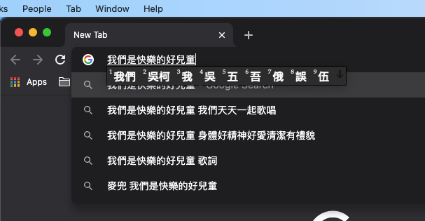
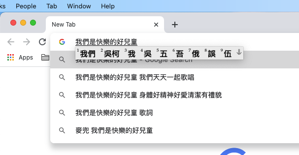

Here’s yet another release of my Cantonese Artificially-intelligent Phonetic (CAP) Input Method for macOS, Linux, and Windows 10. Its statistical language model now incorporates the 2021-04-01 Chinese and Cantonese versions of the Wikipedia, among other sources. A small change to the macOS version allows the candidate window to be displayed correctly under either dark or light mode setting.
This release of CAP honors the setting of dark/light mode on macOS:


Its statistical language model was built using sentences collected from the 2021-04-01 Chinese and Cantonese versions of the Wikipedia, and other sources.
Download this release of the CAP input method for your platform with one of the following links.
| Version | Download Location | MD5 Checksum |
|---|---|---|
| macOS | Chinese - Cantonese AI Phonetic IM.zip |
bd23c8492b8642c8d747f8ee7e949774 |
| Windows 10 (64-bit) | CAPInstallerReleaseNew.msi |
218d9c063f3f7cd27a4c32aef4e42e5c |
| Linux | fcitx-cap_1.0.0_amd64.deb |
cd2e766353c123b4c448414b36ed151a |
To install CAP, follow the instructions for the previous release.
Note that according to CAP’s license, you can use it for personal and non-commercial purposes, and are prohibited from redistributing it, or any of its parts.
Enjoy!
Category: Programming